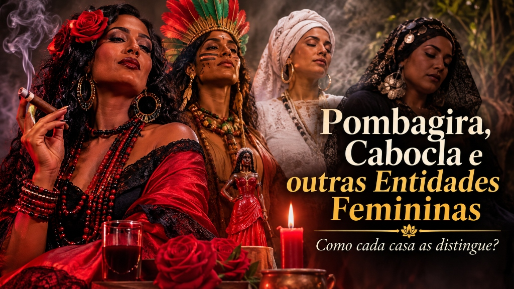

Pombagira, Cabocla e outras entidades femininas: diferenças, aproximações e identidades nas tradições afro-brasileiras
Entenda como diferentes comunidades religiosas distinguem Pombagiras, Caboclas, entidades femininas da Jurema e outras manifestações espirituais. Uma investigação sobre identidades, fundamentos, linhas de trabalho e diversidade religiosa por Alexia Melusine.

Pombagira, Cabocla e outras entidades femininas: diferenças, aproximações e identidades nas tradições afro-brasileiras • Acervo Pombagiras.com
Existe uma questão pouco explorada, mas extremamente importante para compreender a diversidade das religiões afro-brasileiras: por que algumas entidades femininas são reconhecidas como Pombagiras, outras como Caboclas, outras como Mestras da Jurema, e outras recebem denominações próprias dentro de diferentes comunidades espirituais?
A pergunta parece simples, mas envolve um universo complexo de tradições, fundamentos religiosos, memórias coletivas, formas de organização ritual e interpretações sobre a natureza das entidades.
Na internet, é comum encontrar classificações apressadas. Algumas publicações apresentam todas as entidades femininas como se fossem expressões de uma mesma força espiritual, apenas com nomes, roupas ou personalidades diferentes. Outras fazem exatamente o contrário: estabelecem divisões rígidas, como se todas as tradições compartilhassem uma classificação universal, imutável e perfeitamente delimitada.
As duas abordagens podem produzir equívocos.
Uma Pombagira não se torna Cabocla simplesmente porque apresenta características de força, coragem, natureza ou independência. Uma Cabocla não se transforma em Pombagira porque utiliza determinados elementos simbólicos ou manifesta uma personalidade intensa. Da mesma maneira, uma entidade feminina cultuada na Jurema não deve ser automaticamente enquadrada nas classificações da Umbanda ou da Quimbanda.
É necessário compreender que as identidades espirituais são reconhecidas dentro de contextos religiosos específicos.
Isso significa que o nome de uma entidade, sua apresentação, sua história, seus elementos simbólicos, sua forma de atuação e o lugar que ocupa na organização ritual precisam ser considerados em conjunto.
O propósito deste estudo é investigar essas diferenças sem transformar diversidade em confusão e sem transformar diferenças em hierarquias.
Não pretendemos estabelecer uma classificação definitiva para todas as religiões. Pretendemos compreender como diferentes comunidades constroem, reconhecem, preservam e transmitem suas próprias distinções.
Afinal, respeitar uma tradição também significa reconhecer que ela possui seus próprios critérios de interpretação.
1. O problema das classificações universais
Um dos maiores obstáculos para estudar entidades femininas nas religiões afro-brasileiras é a tendência de procurar uma única classificação capaz de explicar todas as experiências religiosas.
Essa tentativa pode parecer organizada, mas frequentemente desconsidera a formação histórica e a autonomia das comunidades.
Umbanda, Quimbanda, Jurema Sagrada e outras expressões religiosas possuem trajetórias, linguagens, organizações e fundamentos que não podem ser reduzidos a um único sistema classificatório.
Mesmo dentro de uma mesma religião, diferentes casas podem apresentar interpretações distintas.
Uma comunidade pode reconhecer determinadas entidades femininas em linhas específicas, enquanto outra pode utilizar nomenclaturas diferentes para organizar suas manifestações. Uma casa pode trabalhar com aproximações entre determinadas categorias, enquanto outra preserva distinções muito bem estabelecidas.
Isso não significa necessariamente que uma esteja certa e a outra errada.
Significa que estamos diante de tradições vivas, com processos próprios de transmissão e interpretação.
É importante distinguir três situações:
- Diferença de nomenclatura: duas comunidades podem utilizar nomes distintos para determinadas categorias ou funções.
- Diferença de fundamento: entidades que parecem semelhantes na apresentação podem ocupar posições religiosas diferentes.
- Diferença de interpretação: uma mesma denominação pode receber explicações distintas conforme a tradição, a linhagem ou a comunidade.
O pesquisador precisa evitar a tentação de resolver essas diferenças artificialmente.
Quando uma casa afirma que determinada entidade pertence a uma categoria específica, o primeiro passo é compreender os fundamentos que sustentam essa identificação dentro daquela comunidade.
Não é adequado substituir a explicação interna por uma classificação externa apenas porque ela parece mais familiar.
2. Pombagira: uma identidade espiritual que não se resume à aparência feminina
A Pombagira ocupa um lugar importante em diferentes expressões religiosas afro-brasileiras, especialmente em tradições de Umbanda e Quimbanda, embora suas formas de compreensão e culto não sejam uniformes.
Sua identidade não deve ser reduzida à representação de uma mulher sedutora, à sensualidade, ao uso de roupas vermelhas ou pretas, à presença de rosas, espelhos, perfumes ou outros elementos populares de sua iconografia.
Esses elementos podem ter significado em determinadas comunidades, mas não constituem uma definição universal.
A Pombagira é reconhecida por meio de um conjunto de referências religiosas que podem envolver:
- Seu pertencimento a determinada linha, falange ou organização espiritual, quando esses conceitos são utilizados pela casa.
- Sua identificação e apresentação dentro da tradição.
- Os fundamentos transmitidos pela comunidade.
- Sua relação com outras entidades e forças espirituais.
- Suas formas de atuação e os campos de trabalho que lhe são atribuídos.
- Os elementos rituais e simbólicos que acompanham seu culto.
- A memória religiosa construída em torno de sua presença.
Em diferentes comunidades, Pombagiras podem ser relacionadas a temas como autonomia, caminhos, relações humanas, enfrentamento de injustiças, transformação, limites, proteção e questões ligadas à experiência social e existencial.
Entretanto, não se deve transformar essas associações em uma lista obrigatória de atribuições.
Nem toda Pombagira trabalha da mesma maneira. Nem todas as casas utilizam as mesmas classificações. Nem todas as entidades recebem os mesmos fundamentos.
Existe ainda uma questão importante: a apresentação feminina de uma entidade não deve ser confundida com uma definição simplificada de gênero, personalidade ou comportamento.
A identidade espiritual de uma Pombagira não depende de corresponder a uma imagem socialmente esperada de feminilidade.
Isso merece atenção especial porque representações populares frequentemente transformam essas entidades em personagens estereotipadas, apagando a complexidade religiosa de seu culto.
Uma Pombagira não precisa ser interpretada exclusivamente pela sedução, pelo romance, pela sexualidade ou pela estética.
Sua identidade precisa ser compreendida dentro da tradição que a reconhece.
3. Caboclas: ancestralidade, território, natureza e identidade religiosa
As Caboclas ocupam um lugar significativo em diferentes tradições de Umbanda e em outras expressões religiosas brasileiras.
Sua identificação costuma estar relacionada, conforme a comunidade, a referências de ancestralidade indígena, natureza, território, mata, conhecimentos tradicionais, cura, força, proteção e relação com elementos naturais.
Entretanto, é necessário fazer uma ressalva: a categoria Cabocla também apresenta variações históricas, simbólicas e religiosas.
A palavra caboclo possui uma história social complexa no Brasil, marcada por processos de classificação racial, miscigenação, representação indígena e construção de identidades culturais.
Por isso, não devemos tratar a figura religiosa da Cabocla como uma reprodução direta e simples de uma identidade indígena histórica.
A representação espiritual de uma Cabocla pode incorporar elementos de diferentes imaginários, memórias e interpretações religiosas.
Em muitas casas de Umbanda, Caboclas são associadas à linha dos Caboclos, com formas próprias de apresentação, cantos, referências simbólicas e modos de trabalho.
Em outras comunidades, determinadas entidades podem receber interpretações particulares, que não necessariamente correspondem às classificações encontradas em outras casas.
Também é importante evitar a ideia de que todas as Caboclas precisam apresentar os mesmos elementos visuais.
Penas, arcos, flechas, folhas, ervas e referências à mata podem aparecer em determinadas representações, mas não constituem uma obrigação universal.
A identidade de uma Cabocla não pode ser determinada apenas pela utilização de um arco ou pela presença de elementos naturais.
O que importa é o reconhecimento religioso construído dentro da tradição.
Uma diferença fundamental: enquanto determinadas comunidades identificam Pombagiras em organizações espirituais próprias, outras reconhecem Caboclas em estruturas relacionadas à ancestralidade, à mata e a diferentes concepções de trabalho espiritual. Essas referências não devem ser confundidas com uma regra absoluta aplicável a todas as casas.
4. Mestras, Mestras da Jurema e entidades femininas da tradição juremeira
Aqui encontramos um dos pontos mais importantes desta investigação.
A Jurema Sagrada possui uma história religiosa própria, especialmente ligada a tradições indígenas e afro-indígenas do Nordeste brasileiro, com diferentes formas de organização, transmissão e prática.
Não deve ser apresentada simplesmente como uma subdivisão da Umbanda, nem suas entidades devem ser automaticamente traduzidas para as classificações umbandistas.
Em diferentes expressões da Jurema, encontramos referências a Mestres, Mestras, Caboclos, Caboclas, entidades encantadas e outras figuras espirituais.
A categoria de Mestra merece atenção particular.
Em determinadas comunidades juremeiras, as Mestras são reconhecidas por suas histórias, identidades, conhecimentos, relações com a tradição e posições dentro da organização religiosa.
Algumas podem apresentar narrativas relacionadas a mulheres que viveram experiências humanas marcadas por conflitos, deslocamentos, resistência, marginalização ou conhecimentos tradicionais.
Outras são compreendidas por meio de narrativas próprias de encantamento e pertencimento espiritual.
Não existe uma única biografia, uma única origem ou uma única maneira de compreender todas as Mestras.
É importante também não confundir automaticamente Mestra da Jurema com Pombagira.
Uma entidade pode apresentar características simbólicas que, observadas superficialmente, lembram representações de Pombagira: independência, força, presença feminina, enfrentamento de convenções sociais ou determinadas associações com caminhos e relações humanas.
Mas semelhanças de representação não demonstram identidade de categoria.
Uma Mestra pode ser reconhecida como Mestra porque ocupa esse lugar na tradição juremeira que a cultua.
Sua identidade não precisa ser traduzida para outra religião para adquirir legitimidade.
Da mesma maneira, não é correto afirmar que todas as Mestras são Pombagiras disfarçadas, manifestações de uma mesma entidade ou versões regionais de uma única figura espiritual.
Essa interpretação pode apagar justamente aquilo que o estudo deveria preservar: a diversidade histórica e religiosa da Jurema.
5. Outras entidades femininas: por que não devemos reduzir tudo a três categorias?
Pombagiras, Caboclas e Mestras da Jurema são categorias importantes para esta investigação, mas não esgotam a diversidade das figuras femininas presentes nas religiões afro-brasileiras.
Existem outras denominações, identidades e organizações espirituais que precisam ser consideradas conforme o contexto.
Entre elas, podemos investigar:
Pretas-Velhas e entidades femininas ancestrais
Em diferentes comunidades de Umbanda, Pretas-Velhas são reconhecidas dentro de uma organização espiritual própria, frequentemente relacionadas à ancestralidade, à memória, à experiência, ao aconselhamento e à sabedoria.
Sua apresentação feminina não as transforma em Pombagiras ou Caboclas.
É necessário compreender o lugar que ocupam na tradição e as narrativas que sustentam sua identidade.
Iabás e referências às divindades femininas
As divindades femininas das tradições de matriz africana constituem outro campo de investigação.
Oxum, Iemanjá, Iansã, Nanã e outras divindades possuem identidades, histórias e fundamentos próprios nas diferentes tradições que as cultuam.
É fundamental distinguir divindades, entidades espirituais e categorias de manifestação mediúnica.
Uma Pombagira não deve ser automaticamente identificada como uma Iabá, assim como uma entidade feminina não se torna uma divindade apenas por apresentar características associadas a determinada força feminina.
Existem aproximações simbólicas e interpretações religiosas específicas, mas elas precisam ser documentadas sem confundir categorias.
Encantadas e outras figuras femininas
Em tradições de encantaria, Jurema e outras expressões religiosas regionais, encontramos diferentes figuras femininas cuja compreensão depende de narrativas e fundamentos próprios.
O termo encantado, por exemplo, pode possuir significados específicos conforme a tradição e não deve ser utilizado como sinônimo genérico de espírito, entidade ou Pombagira.
Existem comunidades nas quais determinadas figuras femininas são reconhecidas por histórias, lugares, famílias espirituais ou formas particulares de encantamento.
Essas identidades merecem ser estudadas sem serem absorvidas por classificações externas.
Outras denominações locais
Também existem nomes e categorias utilizados em comunidades específicas que não possuem ampla divulgação ou padronização.
O pesquisador precisa ter cuidado para não transformar uma denominação local em uma categoria universal.
A ausência de familiaridade com determinado nome não significa ausência de fundamento religioso.
6. Quando uma entidade pode aparecer em mais de uma tradição?
Esta é provavelmente a questão mais delicada do tema.
Existem comunidades religiosas nas quais diferentes tradições convivem, dialogam, incorporam elementos umas das outras ou compartilham determinados espaços rituais.
Em alguns contextos, uma casa pode trabalhar simultaneamente com fundamentos de Umbanda e Jurema. Em outros, podem existir relações entre práticas de encantaria, tradições afro-brasileiras e formas regionais de culto.
Isso significa que as fronteiras religiosas nem sempre são impermeáveis.
Entretanto, reconhecer aproximações não significa declarar que todas as entidades são iguais.
Uma pesquisa etnográfica realizada em diferentes terreiros pode encontrar situações nas quais uma mesma denominação aparece em organizações religiosas distintas, ou nas quais determinadas entidades são reconhecidas por mais de uma linguagem ritual.
O que precisamos investigar é como essa relação acontece.
Por exemplo:
- Uma Pombagira cultuada em uma casa que também trabalha com Jurema continua sendo reconhecida como Pombagira?
- Uma Mestra pode possuir uma relação particular com entidades que a comunidade também identifica em outros contextos?
- Existem casas que distinguem claramente os trabalhos de Jurema e os trabalhos de esquerda?
- Há comunidades que reconhecem aproximações entre determinadas entidades sem considerar suas identidades equivalentes?
- Como as lideranças explicam essas relações?
Essas perguntas não devem ser respondidas antecipadamente.
O estudo precisa considerar a possibilidade de coexistência, aproximação, integração, diferenciação e até divergência entre as tradições.
Um trabalho acadêmico sobre a Jurema Sagrada em Alhandra, na Paraíba, documenta justamente a complexidade dessas relações e apresenta diferentes maneiras de organizar entidades e panteões, sem que exista uma classificação única compartilhada por todos os pesquisadores e praticantes.
Um estudo publicado em novembro de 2026 sobre as religiosidades juremeiras no Nordeste também destaca a circulação histórica entre contextos indígenas, afro-brasileiros, Catimbó, Umbanda e Jurema Sagrada, ressaltando que essa multiplicidade não deve ser confundida com ausência de organização ou identidade.
Portanto, uma casa pode estabelecer relações entre tradições sem necessariamente apagar suas diferenças.
Essa é uma distinção fundamental.
7. O que realmente diferencia uma Pombagira de uma Cabocla ou de uma Mestra?
Para responder com responsabilidade, precisamos abandonar a ideia de que uma entidade pode ser identificada por uma característica isolada.
A roupa não determina a categoria.
A cor utilizada não determina a categoria.
O comportamento não determina a categoria.
A aparência de uma entidade, isoladamente, não determina sua identidade religiosa.
Uma Cabocla pode apresentar firmeza, autoridade e uma personalidade extremamente intensa. Uma Pombagira pode apresentar uma postura discreta, reservada e serena. Uma Mestra pode manifestar características que, em outra tradição, seriam associadas a determinadas representações de Pombagira.
Nada disso, isoladamente, estabelece uma equivalência.
O reconhecimento precisa considerar o conjunto de fundamentos e referências que a comunidade utiliza.
Podemos organizar a investigação em alguns critérios:
- Identidade declarada e reconhecida pela comunidade — Como a entidade é identificada? Qual nome utiliza? Como a liderança e os integrantes da casa compreendem sua identidade?
- Pertencimento religioso — A qual tradição, linha, corrente ou organização espiritual a entidade pertence segundo os fundamentos daquela comunidade?
- Narrativa e memória — Existe uma história transmitida oralmente? Existem relatos sobre sua trajetória, seu pertencimento ou sua relação com determinada tradição?
- Organização ritual — Em quais trabalhos a entidade se manifesta? Existem sessões, giras, mesas ou outras práticas específicas relacionadas à sua presença?
- Relações espirituais — Como a comunidade compreende suas relações com outras entidades, divindades, linhas e forças espirituais?
- Elementos simbólicos — Quais objetos, cantos, roupas, instrumentos, espaços e referências são associados à entidade? Qual significado possuem naquela comunidade?
- Transmissão dos fundamentos — Quem transmite essas informações? Como são ensinadas? Existem diferenças entre a tradição oral, a orientação da liderança e as interpretações individuais?
Esses critérios não devem funcionar como uma ficha universal de classificação.
São instrumentos de investigação.
Uma comunidade pode considerar determinado critério fundamental, enquanto outra pode atribuir maior importância a aspectos diferentes.
O objetivo não é impor um modelo externo, mas compreender como cada tradição reconhece suas próprias entidades.
8. A aparência não é uma identidade: o perigo dos estereótipos
Um dos problemas mais recorrentes na divulgação popular das entidades femininas é a associação automática entre estética e identidade espiritual.
Uma entidade que utiliza vermelho é imediatamente identificada como Pombagira.
Uma entidade que apresenta elementos de mata é automaticamente classificada como Cabocla.
Uma entidade que utiliza determinados acessórios ou demonstra personalidade expansiva é enquadrada em uma categoria específica.
Essas associações podem até corresponder a referências presentes em algumas comunidades, mas não constituem critérios universais.
A estética religiosa possui significado, mas precisa ser interpretada dentro de seu contexto.
Um espelho, uma rosa, uma bebida, uma erva, uma pena ou um instrumento ritual não possuem necessariamente o mesmo significado em todas as tradições.
O mesmo elemento pode assumir funções diferentes conforme a comunidade, a entidade e o fundamento.
Também é necessário evitar o caminho inverso: acreditar que duas entidades são completamente diferentes porque utilizam roupas, cores ou objetos distintos.
O que diferencia uma identidade espiritual não é simplesmente o figurino.
É o conjunto de relações religiosas, narrativas, fundamentos e reconhecimentos que sustentam aquela identidade.
Existe aqui uma questão ainda mais profunda: quando reduzimos as entidades femininas a imagens estéticas, também corremos o risco de reproduzir estereótipos sobre o feminino.
A Pombagira passa a ser vista exclusivamente como sensualidade. A Cabocla, exclusivamente como natureza. A Preta-Velha, exclusivamente como maternidade. A Mestra, exclusivamente como uma mulher rebelde ou misteriosa.
Essas representações podem conter elementos presentes em determinadas narrativas, mas não devem substituir a complexidade de cada entidade.
A pesquisa de Mariana Leal de Barros e José Francisco Miguel Henriques Bairrão, publicada na Revista do Instituto de Estudos Brasileiros, é especialmente relevante nesse aspecto. A investigação etnográfica realizada em seis terreiros paulistas demonstra como as experiências com Pombagiras podem desafiar concepções convencionais de feminilidade e gênero.
Isso nos permite formular uma questão importante:
Estamos reconhecendo a identidade religiosa de uma entidade ou apenas projetando sobre ela nossas expectativas sociais acerca do que uma mulher espiritual deveria representar?
Essa pergunta merece ser levada a sério.
9. Existem tradições que aproximam Pombagiras e Mestras?
Sim, existem registros de contextos religiosos nos quais essas categorias aparecem próximas, coexistem ou apresentam relações particulares.
Mas é preciso explicar cuidadosamente o que significa essa aproximação.
Uma aproximação pode representar convivência ritual, compartilhamento de elementos simbólicos, integração de práticas, relações históricas ou interpretações específicas de uma comunidade.
Não significa necessariamente que Pombagiras e Mestras sejam a mesma categoria.
A literatura sobre religiosidades afro-indígenas e Jurema apresenta configurações nas quais entidades identificadas como Mestras, Mestres, Exus e Pombagiras aparecem em organizações religiosas relacionadas.
Entretanto, a composição e a interpretação dessas categorias variam conforme a comunidade estudada.
É justamente nesse ponto que o pesquisador precisa ter discernimento.
Imagine uma comunidade na qual determinada entidade é reconhecida como Mestra, mas também possui relações rituais ou narrativas com elementos que, em outra casa, seriam associados à esquerda.
Não seria correto chegar de fora e afirmar que aquela Mestra é necessariamente uma Pombagira.
Da mesma forma, não seria correto declarar que qualquer aproximação entre as duas categorias representa uma mistura religiosa indevida.
A própria comunidade precisa ser ouvida.
É necessário compreender como ela explica a relação, quais fundamentos utiliza e como diferencia as identidades envolvidas.
A diversidade não é sinônimo de desorganização religiosa.
Uma tradição pode possuir fronteiras próprias e, ao mesmo tempo, manter relações com outras tradições.
10. A questão das entidades femininas e das identidades de gênero
Existe outro aspecto que merece atenção: a tendência de interpretar as entidades femininas a partir de expectativas rígidas sobre gênero.
O termo entidade feminina pode indicar uma apresentação, uma identidade espiritual ou uma classificação religiosa específica. Não deve ser automaticamente utilizado para determinar o gênero de quem incorpora, nem para estabelecer como todas as pessoas devem compreender sua relação com essas entidades.
Homens podem incorporar Pombagiras. Mulheres podem incorporar Caboclos. Pessoas trans e não binárias também podem estabelecer relações religiosas com entidades cuja apresentação ou identidade pertence a diferentes expressões do sagrado.
A manifestação de uma entidade não precisa reproduzir a identidade de gênero da pessoa que a incorpora.
Da mesma forma, não se deve presumir que todas as entidades femininas representem uma feminilidade padronizada.
A pesquisa sobre Pombagiras e performances de gênero demonstra que as relações entre corpo, identidade, apresentação e experiência religiosa são mais complexas do que os modelos convencionais permitem compreender.
Esse cuidado é particularmente importante porque muitas representações populares acabam impondo expectativas sobre o comportamento das entidades e das pessoas que trabalham com elas.
Não existe fundamento para transformar uma identidade espiritual em instrumento de julgamento sobre a identidade de gênero de alguém.
O respeito às entidades também exige respeito às pessoas.
11. Como documentar as diferenças sem desrespeitar os fundamentos das casas?
Uma pesquisa séria precisa reconhecer que nem todo conhecimento religioso está disponível publicamente.
Existem fundamentos transmitidos oralmente, conhecimentos reservados, orientações internas e práticas que não devem ser reproduzidas fora de seus contextos.
Documentar não significa expor tudo.
O pesquisador pode investigar a diversidade das tradições sem exigir a revelação de conhecimentos restritos.
É possível trabalhar com entrevistas, publicações autorizadas, registros históricos, estudos acadêmicos e explicações oferecidas voluntariamente pelas lideranças.
Alguns cuidados são indispensáveis:
- Solicitar autorização antes de utilizar relatos identificáveis.
- Respeitar os limites estabelecidos pelas comunidades.
- Diferenciar informações documentadas de interpretações pessoais.
- Não apresentar uma explicação individual como regra geral.
- Preservar as palavras utilizadas pelas próprias lideranças, explicando seu contexto.
- Não reproduzir pontos, fundamentos ou práticas reservadas sem autorização.
- Reconhecer quando não existem informações suficientes para estabelecer uma conclusão.
- Não utilizar a pesquisa para determinar qual tradição possui maior legitimidade.
Uma boa investigação não precisa resolver todas as diferenças.
Às vezes, o resultado mais importante é documentar que duas comunidades possuem compreensões distintas sobre determinada entidade.
Isso também é conhecimento.
12. O que uma comparação responsável precisa reconhecer?
Ao comparar Pombagiras, Caboclas, Mestras da Jurema e outras entidades femininas, precisamos reconhecer pelo menos cinco princípios.
Primeiro: semelhança não significa identidade.
Duas entidades podem apresentar características semelhantes sem pertencer à mesma categoria religiosa.
Segundo: diferença não significa oposição.
Pombagiras, Caboclas e Mestras não precisam ser compreendidas como categorias concorrentes. Cada uma pode ocupar seu próprio lugar dentro de uma organização espiritual.
Terceiro: não existe uma classificação universal obrigatória.
As tradições possuem histórias, fundamentos e organizações próprias. Uma classificação utilizada em determinada casa não deve ser automaticamente aplicada a todas as outras.
Quarto: aproximações históricas e religiosas precisam ser investigadas.
A circulação entre Umbanda, Jurema, Catimbó e outras expressões não deve ser negada, mas também não deve ser utilizada como justificativa para apagar diferenças.
Quinto: as próprias comunidades precisam ser ouvidas.
Não é possível compreender adequadamente uma tradição ignorando as pessoas responsáveis por sua preservação e transmissão.
Esses princípios permitem uma investigação mais honesta, que não depende de estabelecer uma hierarquia entre entidades ou tradições.
13. Por que esse estudo é importante para a preservação das tradições?
A internet tornou o conhecimento religioso mais acessível, mas também facilitou a circulação de classificações simplificadas.
Hoje, uma explicação apresentada por uma pessoa pode ser reproduzida milhares de vezes até adquirir aparência de verdade universal.
Isso acontece especialmente com entidades femininas.
Uma interpretação particular passa a ser apresentada como regra. Uma associação simbólica transforma-se em equivalência. Uma experiência de determinada casa é divulgada como se representasse todas as comunidades.
O resultado é um processo de apagamento da diversidade.
Quando uma Mestra da Jurema é automaticamente chamada de Pombagira, sua identidade religiosa pode desaparecer da explicação.
Quando uma Cabocla é reduzida a uma representação genérica da natureza, sua história e seu lugar na tradição podem ser ignorados.
Quando uma Pombagira é descrita exclusivamente pela sensualidade, sua complexidade religiosa e cultural fica comprometida.
Não se trata de impedir aproximações ou questionar a legitimidade das interpretações religiosas de cada comunidade.
Trata-se de documentar corretamente.
O conhecimento responsável não precisa transformar todas as entidades em uma única categoria para demonstrar que existem relações entre elas.
Pelo contrário: quanto melhor compreendemos as diferenças, mais capazes nos tornamos de reconhecer os encontros.
A preservação das tradições exige memória, escuta, discernimento e respeito.
E exige também uma postura importante: reconhecer que nem tudo o que ainda não conhecemos está errado, perdido ou incompleto.
Às vezes, simplesmente pertence a uma tradição que ainda não tivemos a oportunidade de compreender.
14. Considerações finais — reconhecer sem confundir, aproximar sem apagar
Pombagira, Cabocla, Mestra da Jurema e outras entidades femininas não devem ser colocadas em uma mesma categoria apenas porque compartilham apresentações femininas, determinadas características simbólicas ou experiências religiosas que parecem semelhantes.
Também não devemos construir fronteiras artificiais, como se essas tradições nunca tivessem estabelecido relações, intercâmbios ou aproximações ao longo de sua história.
O desafio é compreender os dois movimentos simultaneamente.
Existem diferenças que precisam ser preservadas e relações que precisam ser investigadas.
Existem comunidades que estabelecem distinções rigorosas e outras que desenvolvem organizações religiosas nas quais diferentes tradições convivem.
Existem denominações que possuem significados específicos em determinados territórios e outras que apresentam interpretações diferentes conforme a linhagem religiosa.
Nenhuma dessas situações deve ser apagada para facilitar uma explicação.
Uma pesquisa responsável não chega a uma comunidade com a intenção de ensinar como ela deveria compreender suas entidades.
Chega para escutar, documentar, comparar e compreender.
E talvez a pergunta mais importante desta investigação seja justamente esta:
Por que precisamos transformar entidades diferentes em uma única identidade para reconhecer que todas possuem importância dentro de suas respectivas tradições?
Não precisamos.
Uma Pombagira pode ser reconhecida em sua identidade. Uma Cabocla pode ser respeitada em seus fundamentos. Uma Mestra pode preservar sua história dentro da Jurema. E outras entidades femininas podem continuar existindo com suas denominações, narrativas e organizações próprias.
O sagrado não precisa ser uniformizado para ser respeitado.
Conhecer as diferenças não diminui nenhuma entidade. Pelo contrário, impede que sua identidade seja substituída por aquilo que outras pessoas imaginam que ela deveria ser.
Preservar também é saber distinguir. E respeitar também é não traduzir tudo para uma linguagem que não pertence àquela tradição.
Perguntas frequentes — FAQ
1. Pombagira e Cabocla são a mesma entidade?
Não devem ser consideradas equivalentes automaticamente. São categorias reconhecidas em diferentes contextos religiosos, com identidades e fundamentos próprios. Eventuais aproximações precisam ser compreendidas segundo a tradição de cada comunidade.
2. Uma Cabocla pode trabalhar na esquerda?
Isso depende da organização e da interpretação religiosa da casa. Não se deve presumir que todas as comunidades utilizem a mesma divisão entre direita e esquerda ou os mesmos critérios de pertencimento.
3. Toda Mestra da Jurema é uma Pombagira?
Não. Mestra é uma categoria importante em diferentes tradições juremeiras. Sua identidade não deve ser automaticamente convertida em Pombagira, mesmo quando existem aproximações simbólicas ou rituais.
4. Uma mesma casa pode trabalhar com Pombagiras, Caboclas e Mestras?
Sim. Existem comunidades nas quais diferentes tradições e categorias espirituais convivem. A maneira como são organizadas depende dos fundamentos daquela casa.
5. Uma entidade pode ter características de mais de uma categoria?
Pode apresentar características que lembrem diferentes categorias, mas isso não determina automaticamente seu pertencimento. É necessário considerar o reconhecimento e os fundamentos da comunidade.
6. A cor da roupa determina se uma entidade é Pombagira ou Cabocla?
Não. Cores e vestimentas podem possuir significados religiosos, mas não constituem critérios universais de identificação.
7. Existem outras entidades femininas além de Pombagiras, Caboclas e Mestras?
Sim. Diferentes tradições reconhecem Pretas-Velhas, encantadas, ciganas, entidades femininas regionais e outras denominações. Cada uma precisa ser compreendida em seu contexto.
8. Por que existem diferenças entre as classificações das casas?
Porque as religiões possuem histórias, processos de transmissão, fundamentos, influências regionais e formas de organização diferentes. A diversidade interna faz parte da realidade dessas tradições.
Nota da autora
Esta investigação não pretende determinar a identidade de entidades cultuadas por outras comunidades, estabelecer equivalências espirituais ou apresentar uma classificação definitiva das tradições afro-brasileiras.
O objetivo é documentar diferenças, aproximações e formas de reconhecimento, considerando a autonomia religiosa das comunidades e a importância da transmissão oral.
Como pesquisadora independente, considero fundamental distinguir conhecimento documentado, interpretação acadêmica, narrativa religiosa e experiência individual.
Não devemos transformar uma experiência particular em verdade universal, nem utilizar a ausência de documentação escrita como justificativa para desconsiderar conhecimentos preservados oralmente.
As tradições não precisam ser iguais para merecer o mesmo respeito.
Postura do Pombagiras.com
O Pombagiras.com defende a documentação, a preservação e a divulgação responsável do conhecimento sobre Pombagiras e tradições afro-brasileiras relacionadas.
Não comercializamos fundamentos, não reivindicamos autoridade sobre comunidades religiosas e não pretendemos falar em nome de Umbanda, Quimbanda ou Jurema.
Nosso compromisso é com o conhecimento livre, a desmistificação, a pesquisa criteriosa e o respeito à diversidade religiosa.
Não confundimos para simplificar. Não inventamos para preencher lacunas. Não apagamos diferenças para construir uma narrativa conveniente.
O conhecimento deve ser acessível, mas a responsabilidade com aquilo que se divulga precisa ser permanente.
Referências e leituras para aprofundamento
Estas referências ajudam a sustentar a investigação e permitem que o leitor avance para estudos acadêmicos e outras documentações.
-
Mariana Leal de Barros e José Francisco Miguel Henriques Bairrão. Performances de gênero na umbanda: a pombagira como interpretação afro-brasileira de "mulher"? Revista do Instituto de Estudos Brasileiros, 2015.
Consultar artigo na SciELO.
-
Deyvson Barreto Simões da Silva. Rituais e atos pedagógicos performáticos da Jurema Sagrada do Terreiro de Umbanda em Alhandra-PB. Dissertação de mestrado, 2020.
Consultar dissertação da UFPE.
-
Rodrigo de Azeredo Grünewald. Jurema in Northeastern Brazilian Religiosities: Polysemy, Historical Transformations, and Ritual Circulations. International Journal of Latin American Religions, 2026.
Consultar artigo científico.
-
Alexia Melusine. Jurema Sagrada, Exu e Pombagira: Onde Começa uma Tradição e Termina Outra?
Pesquisa e ensaio cultural independente | Pombagiras.com | Por Alexia Melusine